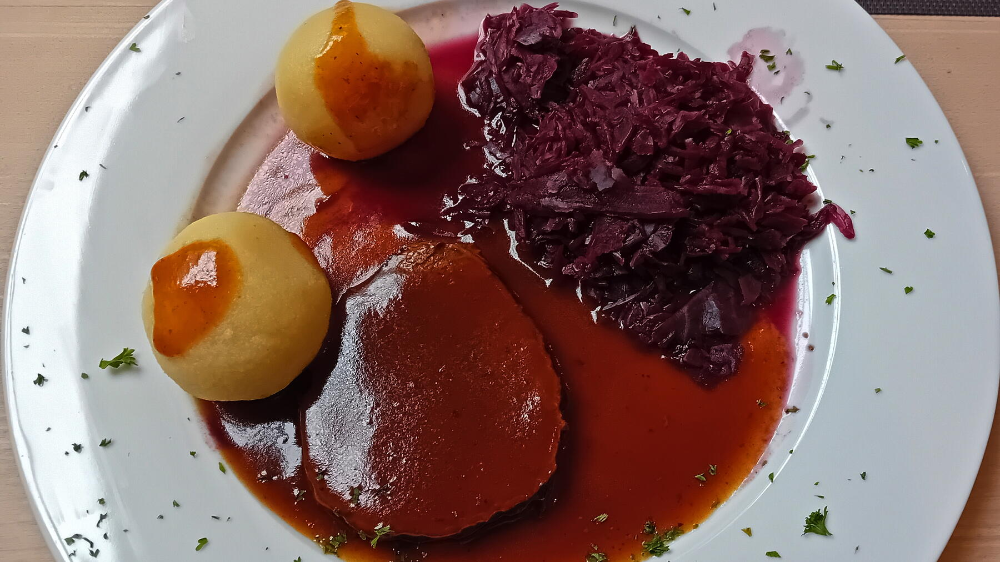

Zurück zur Übersicht
Rinderbraten
Mit Senf eingestrichen, scharf angebraten und zwei Stunden in Rotwein und Brühe im Ofen geschmort.
- Zeit
- 2 Std. 30 Min.
- Schwierigkeit
- mittel
- Kategorie
- Klassiker
- Ernährung
- mit Fleisch
Zutaten
Portionen
- 1,5 kgRinderbraten
- 3Knoblauchzehen, gehackt
- 2mittelgroße Zwiebeln
- 130 mlRotwein, trocken
- 250 mlRinderbrühe
- Öl, Salz, Pfeffer, Senf
- Schalotten, Möhren, Knollensellerie, Lauch
- 1 ELTomatenmark
- 1 ELZucker
- 2Lorbeerblätter
- Fond
Zubereitung
- Den Braten mit Salz und Pfeffer würzen und mit Senf einstreichen.
- Öl in einem Bräter erhitzen und den Braten von allen Seiten scharf anbraten.
- Mit dem Rotwein ablöschen und einkochen lassen.
- Wenn der Wein fast eingekocht ist, Knoblauch und Zwiebeln dazugeben und mit anbraten.
- Sobald sie leicht gebräunt sind, mit der Brühe aufgießen.
- Im geschlossenen Bräter oder in einer Auflaufform bei 180 °C Ober-/Unterhitze 2 Stunden im Ofen schmoren. Zwischendurch nachsehen und bei Bedarf Wasser nachgießen.
- Die Soße zum Schluss mit Salz, Pfeffer und Senf abschmecken und andicken.
Meine Ergänzung: Schalotten, Möhren, Knollensellerie und Lauch grob schneiden. Nach dem Anbraten den Braten herausholen und pfeffern, das Gemüse mit 1 EL Tomatenmark und 1 EL Zucker rösten. Dann 2 Lorbeerblätter, Fond und das Fleisch dazugeben. Nach dem Schmoren den Braten herausholen und ruhen lassen, die Soße vor dem Abschmecken absieben.
Tipp: Dazu passen Kartoffelklöße, Kartoffeln oder Kartoffelpüree und Rotkohl oder Apfelrotkohl.